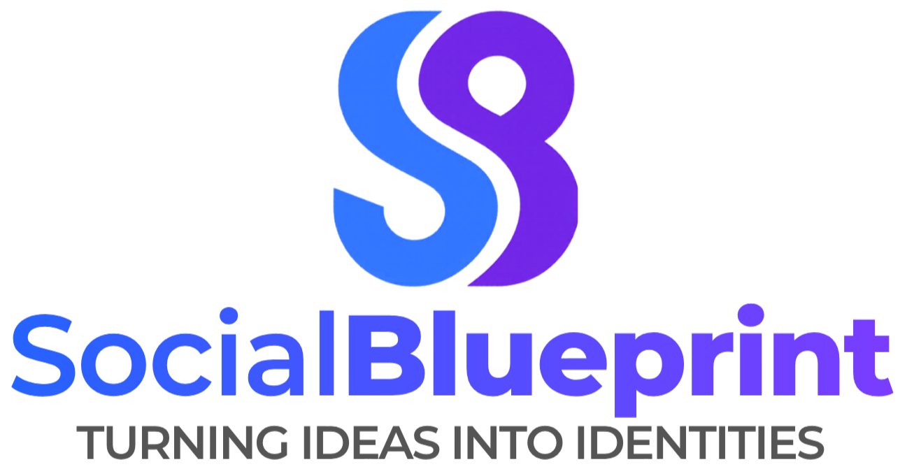

175.4K
Hill’s educational video views
I’m Maria, a digital marketer working across campaigns, content, social media, web and brand experiences.
I turn ideas into clear, well-built campaigns and digital experiences designed to communicate and move people to action.

Results from managing Complytek’s LinkedIn presence since July 2026.
Strategic, creative and hands-on work across B2B marketing, paid media, content and brand projects.
Website development, content structure, email marketing and lead-generation activity.
View case study →
A two-sided growth approach for sellers and buyers, supported by paid media and campaign creative.
View case study →Brand identity, social media, teaser concepts, sponsorships and launch promotion.
View case study →Campaign planning, audience thinking, positioning and execution.
Short-form video, UGC, scripting and social-first creative.
Website pages, landing pages, content structure and digital touchpoints.
Creative direction, paid social strategy, testing and performance thinking.
Three short-form projects across education, financial services and pet-tech storytelling.
A project I built to keep learning by doing.
My side project for working directly with clients, developing campaigns and building practical marketing experience outside my full-time role.
Explore the project →
Management and aviation taught me responsibility, coordination and how to work under pressure. Marketing gave me a place to combine that structure with creativity.
Today I work across B2B marketing, web, content and campaigns while continuing to build through independent client work.
Read my story →If you have an opportunity, project or collaboration in mind, I’d love to hear about it.